AUTOMOTIVE INDUSTRY TRAINING
RETAIL, SERVICE AND REPAIR
AUR05
Learning & Assessment Resource
AURT202170A
Inspect & Service Cooling
Systems

© NSW DET 2008 Page 2 of 33
Acknowledgment and Copyright
© NSW Department of Education and Training (DET) 2008. All rights reserved. This work is
copyrighted, but permission is given to trainers and teachers to make copies by photocopying or
other duplicating processes for use within their own training organisations or in a workplace where
training is being conducted. This permission does not extend to the making of copies for use
outside the immediate training environment for which they are made, or the making of copies for
hire or resale to third parties. Outside these guidelines all material is subject to copyright under the
Copyright Act 1968 (Commonwealth) and permission must be obtained in writing from the
Department of Education and Training. Such permission shall not be unreasonably withheld.
Disclaimer
The views expressed in this work do not necessarily represent the views of the NSW
Department of Education and Training. The NSW Department of Education and Training does not
give warranty nor accept any liability in relation to the content of the work.
Acknowledgement
This work has been produced by the Automotive Training Board NSW Ltd with funding provided by
the NSW Department of Education and Training.

© NSW DET 2008 Page 3 of 33
Contents
OVERVIEW .................................................................................................................................... 4
1.0 HOW A CAR ENGINE WORKS ........................................................................................... 5
2.0 INTERNAL COMBUSTION .................................................................................................. 6
3.0 BASIC ENGINE PARTS ...................................................................................................... 7
3.1 Spark plug ....................................................................................................................... 8
3.2 Valves ............................................................................................................................. 8
3.3 Piston .............................................................................................................................. 9
3.4 Piston rings ...................................................................................................................... 9
3.5 Connecting rod ................................................................................................................ 9
3.6 Crankshaft ....................................................................................................................... 9
3.7 Sump ............................................................................................................................... 9
4.0 ENGINE PROBLEMS .......................................................................................................... 9
4.1 Bad fuel mix ................................................................................................................... 10
4.2 Lack of compression ...................................................................................................... 10
4.3 Lack of spark ................................................................................................................. 10
4.4 Engine Valve Train and Ignition Systems ...................................................................... 11
5.0 ENGINE COOLING, AIR-INTAKE AND STARTING SYSTEMS ........................................ 12
5.1 Engine Lubrication, Fuel, Exhaust and Electrical Systems ............................................. 13
6.0 HOW CAR COOLING SYSTEMS WORK .......................................................................... 14
6.1 The Basics ..................................................................................................................... 15
6.2 Liquid Cooling ................................................................................................................ 15
6.3 Air Cooling ..................................................................................................................... 15
6.4 Plumbing ....................................................................................................................... 16
6.5 Fluid .............................................................................................................................. 16
6.6 Water Pump .................................................................................................................. 17
6.7 Engine ........................................................................................................................... 17
6.8 Radiator ......................................................................................................................... 19
6.9 Pressure Cap ................................................................................................................ 19
6.10 Thermostat .................................................................................................................... 20
6.11 Fan ................................................................................................................................ 21
7.0 HEATING SYSTEM ........................................................................................................... 22
8.0 CARS COOLING SYSTEM SERVICE ............................................................................... 23
9.0 SUMMARY ......................................................................................................................... 24
9.1 Servicing Documentation ............................................................................................... 25
9.2 Final Inspection ............................................................................................................. 25
9.3 For the Technician ......................................................................................................... 25
10.0 COMPETENCY BASED TRAINING AND ASSESSMENT TOOL ...................................... 26
11.0 SOURCES OF ACKNOWLEDGEMENT...............................................................................33

© NSW DET 2008 Page 4 of 33
AURT202170A Inspect and Service Cooling Systems
Pre Requisite Units of Competence
Nil
Overview
This unit covers the competence required to carry out the inspection and service of air and liquid
cooling systems in an automotive retail, service and/or repair context.
The unit includes identification and confirmation of work requirement, preparation for work,
inspection, analysis and servicing of cooling systems and completion of work finalisation
processes, including clean-up and documentation.
All work and work practices must be undertaken to regulatory and legislative requirements. It is
applicable in both a learning and assessment pathway and an assessment only pathway.
This competence is performed in the context that all materials and equipment needed to carry out
this function have been provided, including learning materials, learning programs and learning
resources.
Elements of Competence
To achieve competency in this unit you must demonstrate your ability to:
1. Prepare to undertake the inspection of cooling systems;
2. Inspect cooling systems and analyse results;
3. Prepare to service cooling systems;
4. Carry out servicing; and
5. Prepare equipment for use or storage.
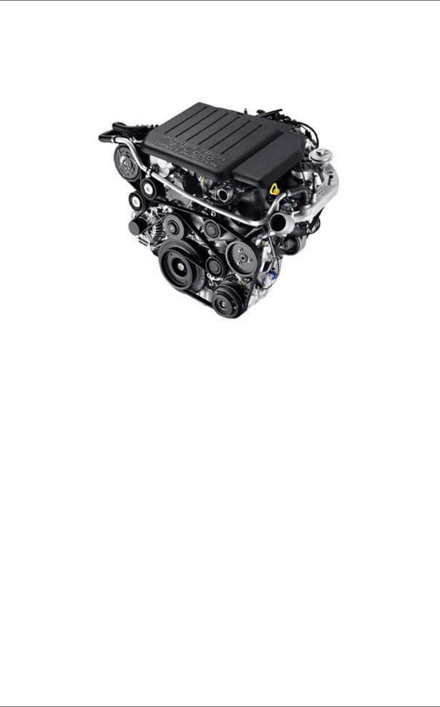
© NSW DET 2008 Page 5 of 33
1.0 How a Car Engine Works
Have you ever opened the hood of your car and wondered what was going on in there? A car
engine can look like a big confusing jumble of metal, tubes and wires to the uninitiated.
Figure 1
You might want to know what's going on simply out of curiosity. Or perhaps you are buying a new
car, and you hear things like "3.0 litre V-6" and "dual overhead cams" and "tuned port fuel
injection." What does all of that mean?
In this resource, we'll discuss the basic idea behind an engine and then go into detail about how all
the pieces fit together, what can go wrong and how to increase performance.
The purpose of a petroleum car engine is to convert petroleum into motion so that your car can
move. Currently the easiest way to create motion from petroleum is to burn the
petroleum inside an
engine. Therefore, a car engine is an internal combustion engine - combustion takes place
internally. Two things to note:
• There are different kinds of internal combustion engines. Diesel engines are one form and
gas turbine engines are another. Variations include
HEMI engines, rotary engines and two-
stroke engines. Each has its own advantages and disadvantages.
• There is such a thing as an external combustion engine. A steam engine in old-fashioned
trains and steam boats is the best example of an external combustion engine. The fuel
(coal, wood, oil, whatever) in a steam engine burns outside the engine to create steam, and
the steam creates motion inside the engine. Internal combustion is a lot more efficient
(takes less fuel per kilometre) than external combustion, plus an internal combustion engine
is a lot smaller than an equivalent external combustion engine. This explains why we don't
see any cars from Ford and GM using steam engines.
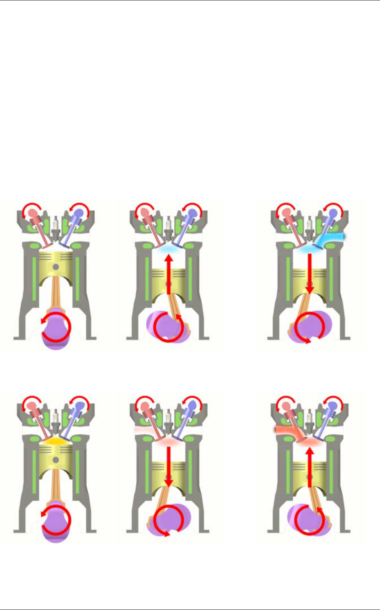
© NSW DET 2008 Page 6 of 33
2.0 Internal Combustion
The potato cannon uses the basic principle behind any reciprocating internal combustion engine: If
you put a tiny amount of high-energy fuel (like gasoline) in a small, enclosed space and ignite it, an
incredible amount of energy is released in the form of expanding gas. You can use that energy to
propel a potato 150 metres. In this case, the energy is translated into potato motion. You can also
use it for more interesting purposes. For example, if you can create a cycle that allows you to set
off explosions like this hundreds of times per minute, and if you can harness that energy in a useful
way, what you have is the core of a car engine!
Almost all cars currently use what is called a four-stroke combustion cycle to convert petroleum
into motion. The four-stroke approach is also known as the Otto cycle, in honour of Nikolaus Otto,
who invented it in 1867. The four strokes are:
Starting position, intake stroke, compression stroke.
Ignition of fuel, power stroke, exhaust stroke.
Figure 2
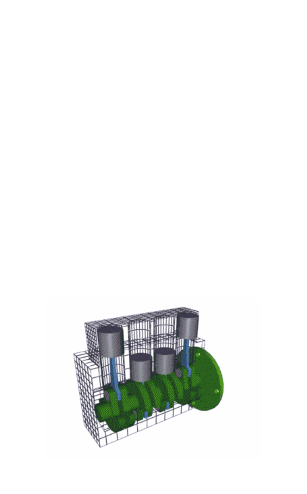
© NSW DET 2008 Page 7 of 33
You can see in Figure 2 that a device called a piston replaces the potato in the potato cannon. The
piston is connected to the crankshaft by a connecting rod. As the crankshaft revolves, it has the
effect of "resetting the cannon." Here's what happens as the engine goes through its cycle:
• The piston starts at the top, the intake valve opens, and the piston moves down to let the
engine take in a cylinder-full of air and petroleum. This is the intake stroke. Only the tiniest
drop of petroleum needs to be mixed into the air for this to work;
• Then the piston moves back up to compress this fuel/air mixture. Compression makes the
explosion more powerful; and
• When the piston reaches the top of its stroke, the spark plug emits a spark to ignite the
petroleum. The petroleum charge in the cylinder explodes, driving the piston down. Once
the piston hits the bottom of its stroke, the exhaust valve opens and the exhaust leaves the
cylinder to go out the tailpipe.
Now the engine is ready for the next cycle, so it intakes another charge of air and gas.
The motion that comes out of an internal combustion engine is rotational, while the motion
produced by a potato cannon is linear (straight line). In an engine the linear motion of the pistons is
converted into rotational motion by the crankshaft. The rotational motion is nice because we plan to
turn (rotate) the car's wheels with it anyway.
3.0 Basic Engine Parts
The core of the engine is the cylinder, with the piston moving up and down inside the cylinder. The
engine described above has one cylinder. That is typical of most lawn mowers, but most cars have
more than one cylinder (four, six and eight cylinders are common). In a multi-cylinder engine, the
cylinders usually are arranged in one of three ways: inline,
V or flat (also known as horizontally
opposed or boxer), as shown in the following figures.
Figure 3 Inline - The cylinders are arranged in a line in a single bank.
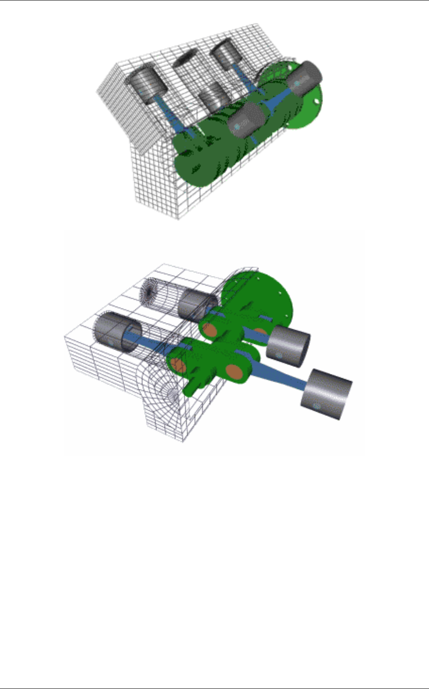
© NSW DET 2008 Page 8 of 33
Figure 4 V - The cylinders are arranged in two banks set at an angle to one another
Figure 5 Flat - The cylinders are arranged in two banks on opposite sides of the engine
Different configurations have different advantages and disadvantages in terms of smoothness,
manufacturing cost and shape characteristics. These advantages and disadvantages make them
more suitable for certain vehicles.
3.1 Spark plug
The spark plug supplies the spark that ignites the air/fuel mixture so that combustion can occur.
The spark must happen at just the right moment for things to work properly.
3.2 Valves
The intake and exhaust valves open at the proper time to let in air and fuel and to let out exhaust.

© NSW DET 2008 Page 9 of 33
Note that both valves are closed during compression and combustion so that the combustion
chamber is sealed.
3.3 Piston
A piston is a cylindrical piece of metal that moves up and down inside the cylinder.
3.4 Piston rings
Piston rings provide a sliding seal between the outer edge of the piston and the inner edge of the
cylinder. The rings serve two purposes:
• They prevent the fuel/air mixture and exhaust in the combustion chamber from leaking into
the sump during compression and combustion.
• They keep oil in the sump from leaking into the combustion area, where it would be burned
and lost.
• Most cars that "burn oil" and have to have a quart added every 1,500 kilometres are
burning it because the engine is old and the rings no longer seal things properly.
3.5 Connecting rod
The connecting rod connects the piston to the crankshaft. It can rotate at both ends so that its
angle can change as the piston moves and the crankshaft rotates.
3.6 Crankshaft
The crankshaft turns the piston's up and down motion into circular motion just like a crank on a
jack-in-the-box does.
3.7 Sump
The sump surrounds the crankshaft. It contains some amount of oil, which collects in the bottom of
the sump (the oil pan).
4.0 Engine Problems
So you go out one morning and your engine will turn over but it won't start... What could be wrong?
Now that you know how an engine works, you can understand the basic things that can keep an
engine from running. Three fundamental things can happen: a bad fuel mix, lack of compression or
lack of spark. Beyond that, thousands of minor things can create problems, but these are the "big
three." Based on the simple engine we have been discussing, here is a quick rundown on how
these problems affect your engine:

© NSW DET 2008 Page 10 of 33
4.1 Bad fuel mix
A bad fuel mix can occur in several ways:
• You are out of gas, so the engine is getting air but no fuel.
• The air intake might be clogged, so there is fuel but not enough air.
• The fuel system might be supplying too much or too little fuel to the mix, meaning that
combustion does not occur properly.
• There might be an impurity in the fuel (like water in your gas tank) that makes the fuel not
burn.
4.2 Lack of compression
• If the charge of air and fuel cannot be compressed properly, the combustion process will
not work like it should. Lack of compression might occur for these reasons:
• Your piston rings are worn (allowing air/fuel to leak past the piston during compression).
• The intake or exhaust valves are not sealing properly, again allowing a leak during
compression.
• There is a hole in the cylinder.
• The most common "hole" in a cylinder occurs where the top of the cylinder (holding the
valves and spark plug and also known as the cylinder head
) attaches to the cylinder itself.
Generally, the cylinder and the cylinder head bolt together with a thin gasket pressed
between them to ensure a good seal. If the gasket breaks down, small holes develop
between the cylinder and the cylinder head, and these holes cause leaks.
4.3 Lack of spark
The spark might be nonexistent or weak for a number of reasons:
• If your spark plug or the wire leading to it is worn out, the spark will be weak;
• If the wire is cut or missing, or if the system that sends a spark down the wire is not working
properly, there will be no spark; and
• If the spark occurs either too early or too late in the cycle (i.e. if the ignition timing is off), the
fuel will not ignite at the right time, and this can cause all sorts of problem.
Many other things can go wrong. For example:
• If the battery is dead, you cannot turn over the engine to start it;
• If the bearings that allow the crankshaft to turn freely are worn out, the crankshaft cannot
turn so the engine cannot run;
• If the valves do not open and close at the right time or at all, air cannot get in and exhaust
cannot get out, so the engine cannot run;
• If someone sticks a potato up your tailpipe, exhaust cannot exit the cylinder so the engine
will not run;
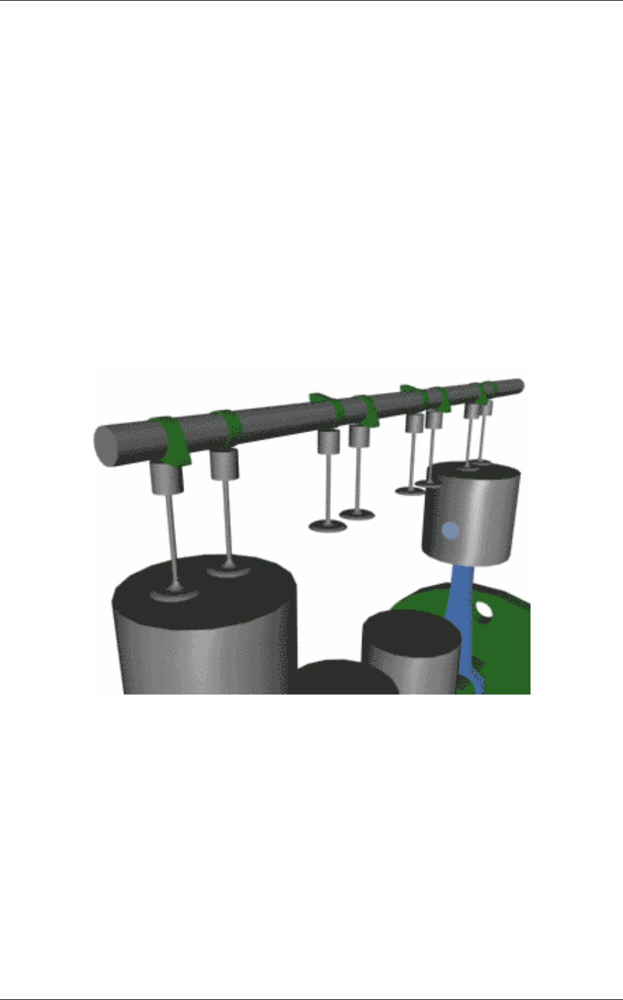
© NSW DET 2008 Page 11 of 33
• If you run out of oil, the piston cannot move up and down freely in the cylinder, and the
engine will seize; and
• In a properly running engine, all of these factors are within tolerance.
As you can see, an engine has a number of systems that help it do its job of converting fuel into
motion. We'll look at the different subsystems used in engines in the next few sections.
4.4 Engine Valve Train and Ignition Systems
Most engine subsystems can be implemented using different technologies, and better technologies
can improve the performance of the engine. Let's look at all of the different subsystems used in
modern engines, beginning with the valve train.
The valve train consists of the valves and a mechanism that opens and closes them. The opening
and closing system is called a camshaft (Figure 6). The camshaft has lobes on it that move the
valves up and down.
Figure 6 The camshaft
Most modern engines have what are called overhead cams. This means that the camshaft is
located above the valves, as you see in Figure above. The cams on the shaft activate the valves
directly or through a very short linkage. Older engines used a camshaft located in the sump near
the crankshaft. Rods linked the cam below to valve lifters above the valves. This approach has
more moving parts and also causes more lag between the cam's activation of the valve and the
valve's subsequent motion. A timing belt or timing chain links the crankshaft to the camshaft so
that the valves are in sync with the pistons. The camshaft is geared to turn at one-half the rate of
the crankshaft. Many high-performance engines have four valves per cylinder (two for intake, two
for exhaust), and this arrangement requires two camshafts per bank of cylinders, hence the phrase
"dual overhead cams."
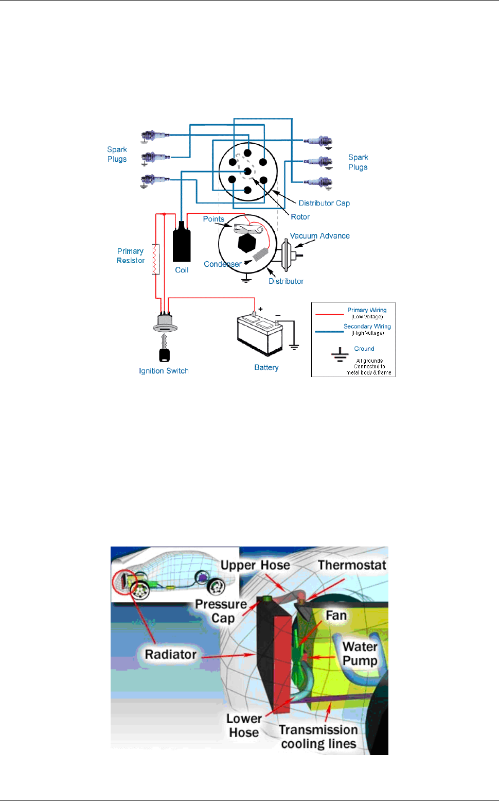
© NSW DET 2008 Page 12 of 33
The ignition system (Figure 7) produces a high-voltage electrical charge and transmits it to the
spark plugs via ignition wires. The charge first flows to a distributor, which you can easily find
under the hood of most cars. The distributor has one wire going in the centre and four, six, or eight
wires (depending on the number of cylinders) coming out of it. These ignition wires send the
charge to each spark plug. The engine is timed so that only one cylinder receives a spark from the
distributor at a time. This approach provides maximum smoothness.
Figure 7 The ignition system
5.0 Engine Cooling, Air-intake and Starting Systems
The cooling system in most cars consists of the radiator and water pump. Water circulates through
passages around the cylinders and then travels through the radiator to cool it off. In a few cars
(most notably Volkswagen Beetles), as well as most motorcycles and lawn mowers, the engine is
air-cooled instead (You can tell an air-cooled engine by the fins adorning the outside of each
cylinder to help dissipate heat.). Air-cooling makes the engine lighter but hotter, generally
decreasing engine life and overall performance.
Figure 8 Diagram of a cooling system showing how all the plumbing is connected
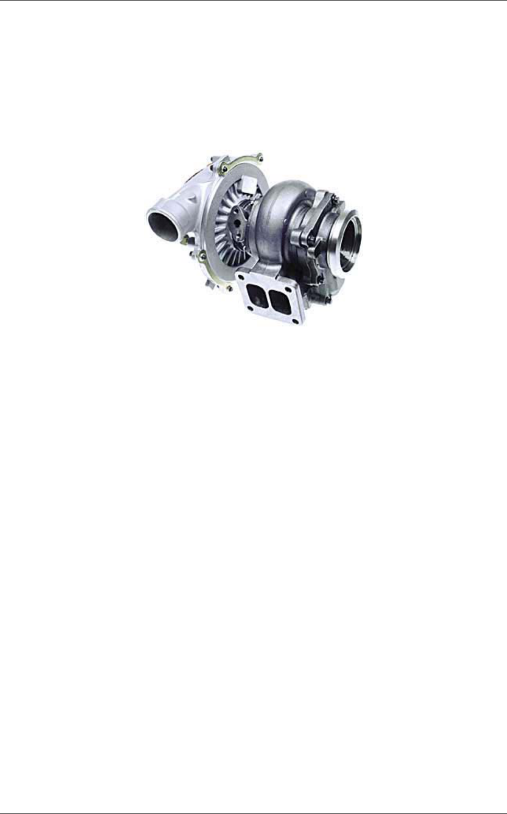
© NSW DET 2008 Page 13 of 33
So now you know how and why your engine stays cool. But why is air circulation so important?
Most cars are normally aspirated, which means that air flows through an air filter and directly into
the cylinders. High-performance engines are either turbocharged or supercharged, which means
that air coming into the engine is first pressurized (so that more air/fuel mixture can be squeezed
into each cylinder) to increase performance. The amount of pressurization is called boost. A
turbocharger uses a small turbine attached to the exhaust pipe to spin a compressing turbine in the
incoming air stream. A supercharger is attached directly to the engine to spin the compressor.
Figure 9 Turbocharger
Increasing your engine's performance is great, but what exactly happens when you turn the key to
start it? The starting system consists of an electric starter motor and a starter solenoid. When you
turn the ignition key, the starter motor spins the engine a few revolutions so that the combustion
process can start. It takes a powerful motor to spin a cold engine. The starter motor must
overcome:
• All of the internal friction caused by the piston rings
• The compression pressure of any cylinder(s) that happens to be in the compression stroke
• The energy needed to open and close valves with the camshaft
• All of the "other" things directly attached to the engine, like the water pump, oil pump,
alternator, etc.
Because so much energy is needed and because a car uses a 12-volt electrical system, hundreds
of amps of electricity must flow into the starter motor. The starter solenoid is essentially a large
electronic switch that can handle that much current. When you turn the ignition key, it activates the
solenoid to power the motor.
5.1 Engine Lubrication, Fuel, Exhaust and Electrical Systems
When it comes to day-to-day car maintenance, the first concern is probably the amount of
petroleum in your car. How does the petroleum that you put in power the cylinders? The engine's
fuel system pumps petroleum from a tank and mixes it with air so that the proper air/fuel mixture
can flow into the cylinders. Fuel is delivered in three common ways: carburetion, port fuel injection
and direct fuel injection.
© NSW DET 2008 Page 14 of 33
In carburetion, a device called a carburettor mixes gas into air as the air flows into the engine. In a
fuel-injected engine, the right amount of fuel is injected individually into each cylinder either right
above the intake valve (port fuel injection) or directly into the cylinder (direct fuel injection).
Oil also plays an important part. The lubrication system makes sure that every moving part in the
engine gets oil so that it can move easily. The two main parts needing oil are the pistons (so they
can slide easily in their cylinders) and any bearings that allow things like the crankshaft and
camshafts to rotate freely. In most cars, oil is sucked out of the oil pan by the oil pump, run through
the oil filter to remove any grit, and then squirted under high pressure onto bearings and the
cylinder walls. The oil then trickles down into the sump, where it is collected again and the cycle
repeats.
Now that you know about some of the stuff that you put in your car, let's look at some of the stuff
that comes out of it. The exhaust system includes the exhaust pipe and the muffler. Without a
muffler, what you would hear is the sound of thousands of small explosions coming out your
tailpipe. A muffler dampens the sound. The exhaust system also includes a catalytic converter.
The emission control system in modern cars consists of a catalytic converter, a collection of
sensors and actuators, and a computer to monitor and adjust everything. For example, the catalytic
converter uses a catalyst and oxygen to burn off any unused fuel and certain other chemicals in
the exhaust. An oxygen sensor in the exhaust stream makes sure there is enough oxygen
available for the catalyst to work and adjusts things if necessary.
Besides gas, what else powers your car? The electrical system consists of a battery and an
alternator. The alternator is connected to the engine by a belt and generates electricity to recharge
the battery. The battery makes 12-volt power available to everything in the car needing electricity
(the ignition system, radio, headlights, windshield wipers, power windows and seats, computers,
etc.) through the vehicle's wiring.
6.0 How Car Cooling Systems Work
Although petroleum engines have improved a lot, they are still not very efficient at turning chemical
energy into mechanical power. Most of the energy in the gasoline (perhaps 70%) is converted into
heat, and it is the job of the cooling system to take care of that heat. In fact, the cooling system on
a car driving down the freeway dissipates enough heat to heat two average-sized houses! The
primary job of the cooling system is to keep the engine from overheating by transferring this heat to
the air, but the cooling system also has several other important jobs.
The engine in your car runs best at a fairly high temperature. When the engine is cold, components
wear out faster, and the engine is less efficient and emits more pollution. So another important job
of the cooling system is to allow the engine to heat up as quickly as possible, and then to keep the
engine at a constant temperature.
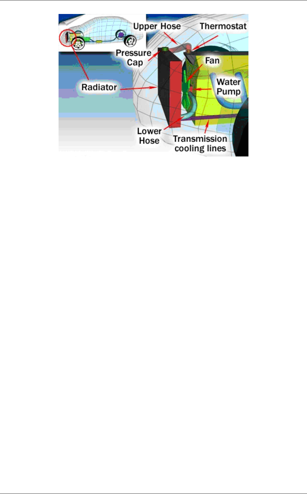
© NSW DET 2008 Page 15 of 33
Diagram of a cooling system: how the plumbing is connected
6.1 The Basics
Inside your car's engine, fuel is constantly burning. A lot of the heat from this combustion goes
right out the exhaust system, but some of it soaks into the engine, heating it up. The engine runs
best when its coolant is about 200 degrees Fahrenheit (93 degrees Celsius). At this temperature:
• The combustion chamber is hot enough to completely vaporize the fuel, providing better
combustion and reducing emissions.
• The oil used to lubricate the engine has a lower viscosity (it is thinner), so the engine
parts move more freely and the engine wastes less power moving its own components
around.
• Metal parts wear less.
There are two types of cooling systems found on cars: liquid-cooled and air-cooled.
6.2 Liquid Cooling
The cooling system on liquid-cooled cars circulates a fluid through pipes and passageways in the
engine. As this liquid passes through the hot engine it absorbs heat, cooling the engine. After the
fluid leaves the engine, it passes through a heat exchanger, or radiator, which transfers the heat
from the fluid to the air blowing through the exchanger.
6.3 Air Cooling
Some older cars, and very few modern cars, are air-cooled. Instead of circulating fluid through the
engine, the engine block is covered in aluminium fins that conduct the heat away from the cylinder.
A powerful fan forces air over these fins, which cools the engine by transferring the heat to the air.
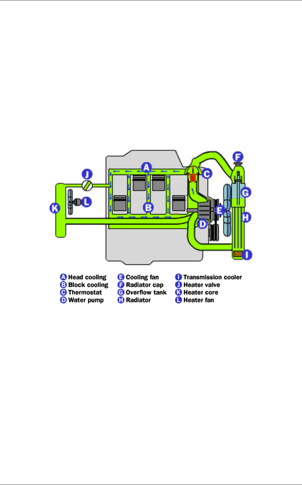
© NSW DET 2008 Page 16 of 33
6.4 Plumbing
The cooling system in your car has a lot of plumbing. We'll start at the pump and work our way
through the system, and in the next sections we'll talk about each part of the system in more detail.
The pump sends the fluid into the engine block, where it makes its way through passages in the
engine around the cylinders. Then it returns through the cylinder head of the engine. The
thermostat is located where the fluid leaves the engine. The plumbing around the thermostat sends
the fluid back to the pump directly if the thermostat is closed. If it is open, the fluid goes through the
radiator first and then back to the pump.
There is also a separate circuit for the heating system. This circuit takes fluid from the cylinder
head and passes it through a heater core and then back to the pump.
On cars with automatic transmissions, there is normally also a separate circuit for cooling the
transmission fluid built into the radiator. The oil from the transmission is pumped by the
transmission through a second heat exchanger inside the radiator.
6.5 Fluid
Cars operate in a wide variety of temperatures, from well below freezing to well over 100 F (38 C).
So whatever fluid is used to cool the engine has to have a very low freezing point, a high boiling
point, and it has to have the capacity to hold a lot of heat.
Water is one of the most effective fluids for holding heat, but water freezes at too high a
temperature to be used in car engines. The fluid that most cars use is a mixture of water and
ethylene glycol (C
2
H
6
O
2
), also known as antifreeze. By adding ethylene glycol to water, the boiling
and freezing points are improved significantly.
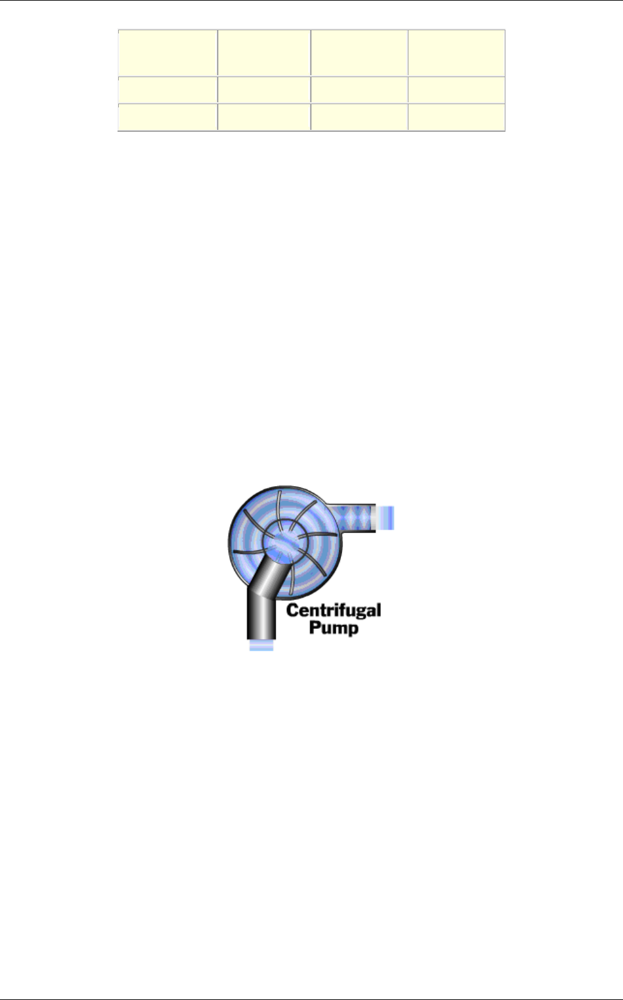
© NSW DET 2008 Page 17 of 33
Pure Water
50/50
C
2
H
6
O
2
/Water
70/30
C
2
H
6
O
2
/Water
Freezing Point
0 C / 32 F -37 C / -35 F -55 C / -67 F
Boiling Point 100 C / 212 F
106 C / 223 F 113 C / 235 F
The temperature of the coolant can sometimes reach 250 to 275 F (121 to 135 C). Even with
ethylene glycol added, these temperatures would boil the coolant, so something additional must be
done to raise its boiling point.
The cooling system uses pressure to further raise the boiling point of the coolant. Just as the
boiling temperature of water is higher in a pressure cooker, the boiling temperature of coolant is
higher if you pressurize the system. Most cars have a pressure limit of 14 to 15 pounds per square
inch (psi), which raises the boiling point another 45 F (25 C) so the coolant can withstand the high
temperatures.
Antifreeze also contains additives to resist corrosion.
6.6 Water Pump
The water pump is a simple centrifugal pump driven by a belt connected to the crankshaft of the
engine. The pump circulates fluid whenever the engine is running.
A centrifugal pump like the one used in your car
The water pump uses centrifugal force to send fluid to the outside while it spins, causing fluid to be
drawn from the centre continuously. The inlet to the pump is located near the centre so that fluid
returning from the radiator hits the pump vanes. The pump vanes fling the fluid to the outside of the
pump, where it can enter the engine.
The fluid leaving the pump flows first through the engine block and cylinder head, then into the
radiator and finally back to the pump.
6.7 Engine
The engine block and cylinder head have many passageways cast or machined in them to allow
for fluid flow. These passageways direct the coolant to the most critical areas of the engine.
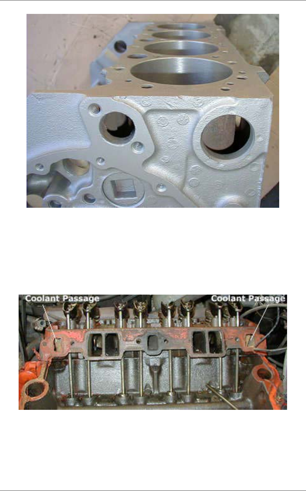
© NSW DET 2008 Page 18 of 33
Note that the walls of the cylinder are quite thin, and that the engine block is mostly hollow.
Temperatures in the combustion chamber of the engine can reach 4,500 F (2,500 C), so cooling
the area around the cylinders is critical. Areas around the exhaust valves are especially crucial,
and almost all of the space inside the cylinder head around the valves that is not needed for
structure is filled with coolant. If the engine goes without cooling for very long, it can seize. When
this happens, the metal has actually gotten hot enough for the piston to weld itself to the cylinder.
This usually means the complete destruction of the engine.
The head of the engine also has large coolant passageways.
One interesting way to reduce the demands on the cooling system is to reduce the amount of heat
that is transferred from the combustion chamber to the metal parts of the engine. Some engines do
this by coating the inside of the top of the cylinder head with a thin layer of ceramic. Ceramic is a
poor conductor of heat, so less heat is conducted through to the metal and more passes out of the
exhaust.
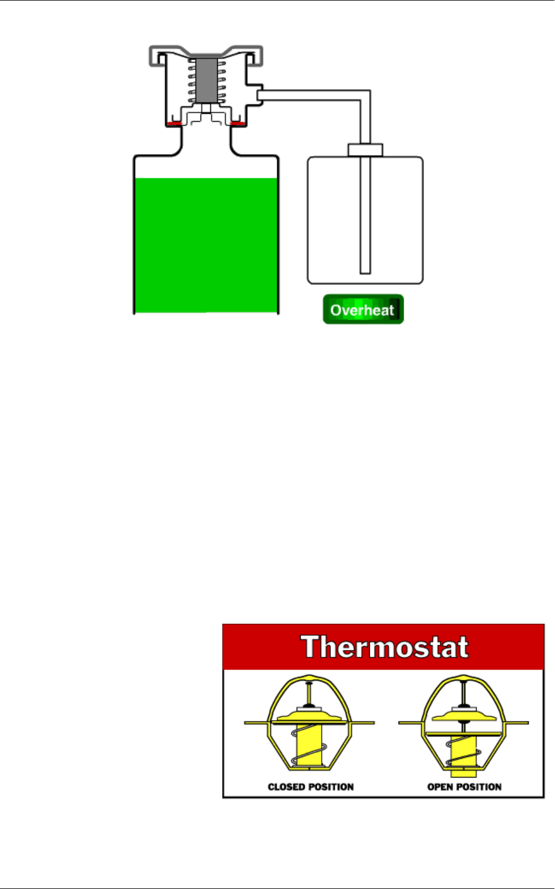
© NSW DET 2008 Page 20 of 33
Cutaway of radiator cap and reservoir
When the fluid in the cooling system heats up, it expands, causing the pressure to build up. The
cap is the only place where this pressure can escape, so the setting of the spring on the cap
determines the maximum pressure in the cooling system. When the pressure reaches 15 psi, the
pressure pushes the valve open, allowing coolant to escape from the cooling system. This coolant
flows through the overflow tube into the bottom of the overflow tank. This arrangement keeps air
out of the system. When the radiator cools back down, a vacuum is created in the cooling system
that pulls open another spring loaded valve, sucking water back in from the bottom of the overflow
tank to replace the water that was expelled.
6.10 Thermostat
The thermostat's main job is to allow the engine to heat up quickly, and then to keep the engine at
a constant temperature. It does this by regulating the amount of water that goes through the
radiator. At low temperatures, the
outlet to the radiator is completely
blocked - all of the coolant is
recirculated back through the
engine.
Once the temperature of the coolant
rises to between 82 - 91 C (180 and
195 F), the thermostat starts to
open, allowing fluid to flow through
the radiator. By the time the coolant
reaches 93 - 103 C (200 to 218 F),
the thermostat is open all the way.
If you ever have the chance to test one, a thermostat is an amazing thing to watch because what it
does seems impossible. You can put one in a pot of boiling water on the stove. As it heats up, its
The open and closed positions of a thermostat
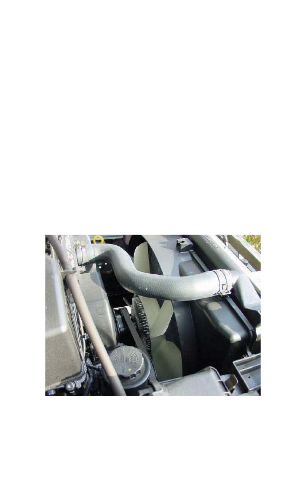
© NSW DET 2008 Page 21 of 33
valve opens about an inch, apparently by magic! If you'd like to try this yourself, go to a car parts
store and buy one for a couple of bucks.
The secret of the thermostat lies in the small cylinder located on the engine-side of the device. This
cylinder is filled with a wax that begins to melt at around 180 F (different thermostats open at
different temperatures, but 180 F is a common one). A rod connected to the valve presses into this
wax. When the wax melts, it expands significantly, pushing the rod out of the cylinder and opening
the valve.
This same technique is used in automatic openers for greenhouse vents and skylights. In these
devices, the wax melts at a lower temperature.
6.11 Fan
Like the thermostat, the cooling fan has to be controlled so that it allows the engine to maintain a
constant temperature.
Front-wheel drive cars have electric fans because the engine is usually mounted transversely,
meaning the output of the engine points toward the side of the car. The fans are controlled either
with a thermostatic switch or by the engine computer, and they turn on when the temperature of
the coolant goes above a set point. They turn back off when the temperature drops below that
point.
Cooling fan
Rear-wheel drive cars with longitudinal engines usually have engine-driven cooling fans. These
fans have a thermostatically controlled viscous clutch. This clutch is positioned at the hub of the
fan, in the airflow coming through the radiator. This special viscous clutch is much like the viscous
coupling sometimes found in all-wheel drive cars.
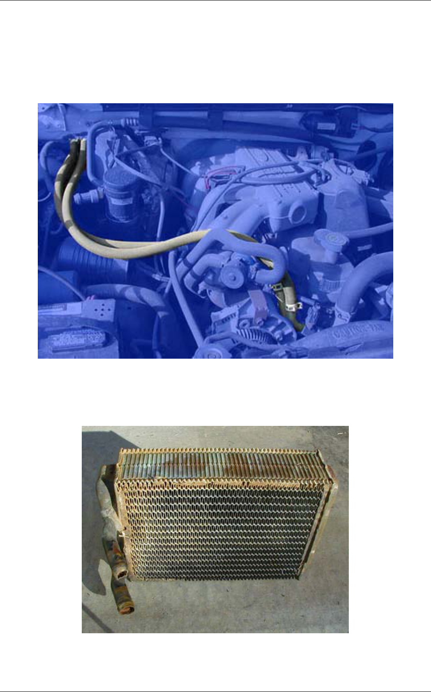
© NSW DET 2008 Page 22 of 33
7.0 Heating System
You may have heard the advice that if you car is overheating, open all the windows and run the
heater with the fan going at full blast. This is because the heating system is actually a secondary
cooling system that mirrors the main cooling system on your car.
Heater plumbing
The heater core, which is located in the dashboard of your car, is really a small radiator. The
heater fan blows air through the heater core and into the passenger compartment of your car.
A heater core looks like a small radiator.
© NSW DET 2008 Page 23 of 33
The heater core draws its hot coolant from the cylinder head and returns it to the pump -- so the
heater works regardless of whether the thermostat is open or closed.
For more information on car cooling systems and related topics, check out the links on the next
page.
8.0 Cars Cooling System Service
Since the colder months will soon be upon us, there are several things considered critical in your
vehicle's maintenance. And since the engine is the heart of your vehicle and directly affects its
operation, here is what you can do to ensure proper engine life and performance. A vehicle's
cooling system should be serviced seasonally to prevent premature engine wear due to extreme
climate or engine temperature.
According to Everco Industries, a leading manufacturer of automotive cooling system parts, one
sure way to prepare the engine's cooling system for these extreme climate conditions is to have
your local service dealer perform a few basic preventive maintenance checks during your next
routine servicing:
1. Check for external leaks. Usual areas of leakage are water manifolds, radiator seams,
water pumps, freeze plugs and all hose connections. The condition of radiator hoses should
be carefully scrutinized for possible deterioration from age and/or wear from rubbing
against accessory brackets, etc. Be aware that in many cases radiator hoses wear from the
inside out, so outside appearance can be deceiving.
2. Check for internal leaks. Pull the oil dipstick and check for evidence of coolant. It will
show up as minute droplets or sludge and should be easy to spot. This could indicate a
cracked head, block or blown head gasket.
3. Check the radiator. This is the one component in your vehicle's cooling system which can
quickly diminish the efficiency and durability of the engine. Check for obstructed air flow
and clean any debris from the fins. Also check the radiator mounting for loose bolts or
cracked brackets from vibration and stress.
4. Check the cooling fan. If the vehicle is equipped with a centrifugal thermo-static type fan
clutch, it is important to spot problems before they occur. Check for wear by moving the fan
blade back and forth. Over 1/4" of play in either direction could point towards excessive
bearing wear. You should also turn the fan by hand. If it free-wheels or there is a rough
grating feel as the fan turns, this could mean excessive fluid loss or bearing wear
respectively. If any of these conditions exist or there is evidence of fluid leakage, the fan
clutch should be replaced. If the vehicle is equipped with an electric cooling fan, a quick
performance check can be made by turning on the A/C and checking to make sure it
operates without excess vibration or noise. Also check all electrical connections for signs of
corrosion, or physical damage. With the engine hot, check to see if the fan is coming on at
the correct temperature and operating properly.

© NSW DET 2008 Page 24 of 33
5. Check the coolant level and conditions.
As a general rule the coolant level should be 1"
to 2" below the radiator filler neck when cool. Use an antifreeze tester to determine the
protection range of the coolant. It should be at least adequate for the geographic area
where you live. If the coolant is over two years old or has rust in it, system flushing and
refilling with new antifreeze solution is recommended and will be sufficient for most
climates. The two year replacement interval is necessary to maintain proper rust inhibitor
and other additive protection in the cooling system.
6. Check the radiator cap. If your cap is rusted or the rubber seal is dried out, it should be
replaced. A pressure tester should be used to be sure the cap is operating at the
recommended pressure level.
7. Check the thermostat. Remove the radiator cap and start the engine. Insert a suitable
thermometer into the radiator neck. When the coolant level drops in the radiator, the
thermostat has opened and is allowing circulation. Record the temperature on the
thermometer and compare to the thermostat specifications. It should be no more than a few
degrees either way of the actual thermostat setting. If you are not in the correct range, the
thermostat will have to be replaced. Be sure to install a new gasket and inspect the
thermostat seating area for corrosion and pitting.
8. Check drives belts.
Visually inspect all belts for glazing or deterioration. These conditions
usually are caused by wear but can be accelerated by improper adjustment, engine fluid
spillage, lubricant leakage or improper belt sizing. Check the vehicle manufacturer's
specification listing for proper belt size, tension and/or deflection specifications.
9. Check heater operation. A quick functional testing of the heater unit can save a lot of mid-
season grief. Visually inspect all hoses for deterioration from age and wear. Also make sure
hoses are not taut. This situation can cause leaks at the heater core. Check the floor under
the heater assembly for signs of coolant loss. This could point towards a leaking heater
core. Also make sure to check the heater valve. Check vacuum lines for leakage or
deterioration. Lubricate all control cables, such as the heater valve control cable, etc. Last
but not least, check all function switches and blower motor switches for proper operation.
Having basic cooling system checks made during routine servicing can prevent costly
breakdowns and inefficient operation of equipment during extreme climate conditions.
Preventive maintenance is the key to being able to drive your car longer while reducing
long term expenses.
9.0 Summary
Automotive cooling system servicing is a specialist task. The opening statement of this learning
resource tells us “Have you ever opened the hood of your car and wondered what was going on in
there? A car engine can look like a big confusing jumble of metal, tubes and wires to the
uninitiated.” We as operators don’t really need to need to know as we can rely of the technicians’.

© NSW DET 2008 Page 25 of 33
9.1 Servicing Documentation
Documentation provides valuable descriptions of an organisation’s development, acquisition, and
operating environments and significantly enhances an organisation’s ability to administer, operate,
and maintain technology systems. Primary advantages for technicians’ involves having access to
operation manuals and on-line application help features. Documentation enhances administrators’
and technicians’ ability to maintain and update systems efficiently and to identify and correct
programming defects.
Developing and maintaining current, accurate documentation can be complicated, time consuming,
and expensive. However, standardised documentation procedures and the use of automated
documentation software can facilitate an organisation’s ability to maintain accurate documentation.
9.2 Final Inspection
Consumers expectations are that they will receive their vehicle back in a serviceable condition and
in a better operational condition than when it was delivered to the workshop. This expectation
requires two (2) critical components:
• A final inspection must be completed by the service technician to ensure that all of the
protective features for the braking system have been refitted is replaced to the required
specifications; and
• A final inspection must be completed by the service technician to ensure that all of the work
that was commenced on the system was completed to workplace, customer and
manufacturers expectations.
9.3 For the Technician
There are some tasks that a technician will not carry out frequently. It would be unrealistic for a
technician to have a detailed knowledge of seldom-performed procedures. In these circumstances,
job cards or checklists are very useful as they give a step-by-step guide to follow whenever the
rarely-used procedure needs to be performed. The required knowledge is often kept in manuals
which may not be easily accessible. However, going through a large manual, possibly in front of a
customer, does nothing for time effectiveness or professional image.
A job card is also used as the basis of a recording process for the organisation. In addition to
refreshing the process for the technician it will be a list of the workplace expectations as well. It is
suggested that the final task on a job card will be to ensure that the equipment is cleaned for use
or storage.
End

© NSW DET 2008 Page 26 of 33
10.0 Competency Based Training and Assessment Tool
• Are you ready for assessment?
Yes
No
• Do you understand the assessment process?
Yes
No
• Have you considered the Recognition of Prior Learning
(RPL) process?
Yes
No
• Do you understand the term evidence and how it is to be
collected?
Yes
No
If you have answered YES to these four questions you are ready to proceed to the assessment
phase of this unit of competence. If you have answered NO you need to discuss your progress with
a qualified assessor.
Introduction
Competency Based Training is always concerned with what a participant will be able to do at the
end of training. What the inputs are or how the participant got there will vary, however it is critical
that the participant achieves the listed competencies and that a quality assessment be undertaken
by a competent trainer/assessor.
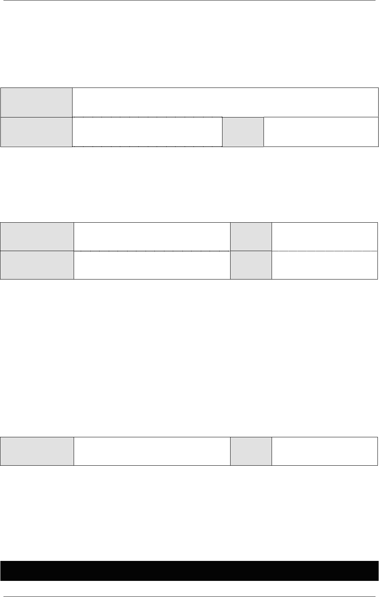
© NSW DET 2008 Page 27 of 33
Assessment Coversheet
Participant Name
Participant Email
Telephone
Number
Receipt of Assessment
Receiver’s Signature
Date
Signature of assessor
Result
I certify that this assessment is my own work based on my personal study and /or research and
that I have acknowledged all materials and resources used in the preparation of this assessment
whether they are books, articles, reports, lecture notes and any other kind of document, electronic
or personal communications. I also certify that the assessment has not previously been submitted
for assessment in any award or course and that I have not copied in part or whole or otherwise
plagarised the work of other students and/or persons. I can produce another hard/soft copy of this
assessment within 24 hours if requested.
Participant Signature
Date
This assignment/assessment will not be marked unless the the above declaration is signed
Please copy this page and attach it to each submission for assessment
© NSW DET 2008 Page 28 of 33
Observation Report/Third Party Assessment
To be administered by an Assessor and/or a Workplace Supervisor
Date of assessment:
Purpose of the task
The purpose of the observations is to assess your competency in inspecting and servicing cooling
systems.
Instructions for the observation component
You will be required to participate in servicing sessions whilst being observed by an assessor who
is qualified in this unit of competency. You may use an assessor from your preferred registered
training organisation, or alternatively, you may source your own assessor (this person must use the
observation checklist and provided a certified copy of their qualifications).
You will need to be observed in a minimum of three (3) service sessions:
• These sessions can be conducted by a workplace supervisor but must be completed by
an suitably qualified assessor from a Registered Training Organisation on at least one
occasion if you are submitting this assessment for recognition towards a nationally
recognised qualification.
You will be assessed on the following required skills and attributes:
• Customer service
• Oral communication and interpersonal skills
• OHS skills
• Workshop practice skills
Please refer to the observation checklist for specific observation requirements under the above
skills groups. Competency will need to be demonstrated over a period of time reflecting the scope
of the role, as reflected by all components of this unit.
Where assessment is part of a structured learning experience, the evidence collected must relate
to a number of performances assessed at different points in time and separated by further learning
and practice with a decision of competence only taken at the point when the assessor has
complete confidence in the ability of the person.
Where assessment is for the purpose of recognition (RCC/RPL), the evidence provided will need to
show that it represents competency demonstrated over a period of time and is current.
Evidence must show the ability to transfer skills to different environments.
© NSW DET 2008 Page 29 of 33
Observation Report/Third Party Assessment
To be administered by an Assessor or a Workplace Supervisor
Candidate Name:
RTO Assessor Name:
Unit/s of Competency:
Name of Workplace:
Date of Assessment:
During the Observation Assessment, did the candidate:
PC S NS
Identify and confirm the nature and scope of work requirements
1.1
Observe throughout the work OH&S requirements, including
individual State/Territory regulatory requirements and personal
protection needs
1.2
Source procedures and information such as workshop manuals and
specifications and tooling required
1.3
Methods appropriate to the circumstances are selected and
prepared in accordance with standard operating procedures
1.4
Identify and prepare resources required for cooling system
inspection are sourced and support equipment
1.5
Observe warnings in relation to working with pressurised cooling
systems
1.6
Implement in accordance with workplace procedures and
manufacturer/component supplier specifications cooling systems
inspection
2.1
Indicate compliance or non-compliance with reference to the results
by comparing them with manufacturer/component supplier
specifications
2.2
Document the results with evidence and supporting information and
recommendation(s)
2.3
Process a report in accordance with workplace procedures
2.4
Observe throughout the work OH&S requirements, including
individual State/Territory regulatory requirements and personal
protection needs
3.1
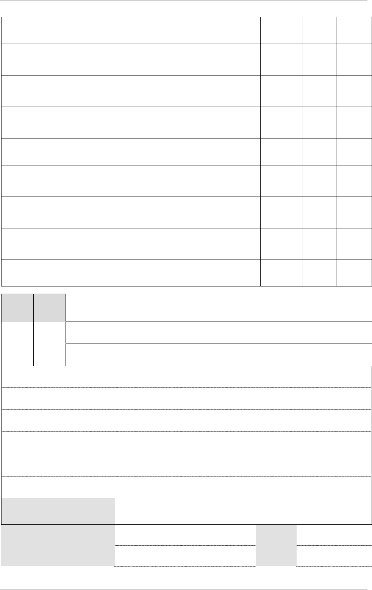
© NSW DET 2008 Page 30 of 33
Identify and source procedures and information required
3.2
Identify and prepare resources and support equipment required for
servicing cooling systems
3.3
Implement a service in accordance with workplace procedures and
manufacturer/component supplier specifications
4.1
Ensure adjustments that are made during the service are in
accordance with manufacturer/component supplier specifications
4.2
Complete servicing schedule documentation
5.1
Complete a final inspection to ensure protective guards, safety
features and cowlings are in place
5.2
Complete a final inspection to ensure work is to workplace
expectations
5.3
Ensure that equipment is cleaned for use or storage to workplace
expectations
5.4
Process the job card in accordance with workplace procedures
5.5
S NS
NS = Not Satisfactory. The participant requires more training, instruction and/or
experience prior to re assessment
S = Satisfactory
NOTE : Always indicate an outcome
Feedback Comments:
Result for Assessment:
Satisfactory (S)
Not Satisfactory (NS)
Candidate Signature: Date:
RTO Assessor Signature:
Date:
© NSW DET 2008 Page 31 of 33
Portfolio of Evidence
To be completed by the candidate and submitted to the RTO Assessor
Candidate Name:
RTO Assessor Name:
Unit/s of Competency:
Name of Workplace:
Date of Assessment:
This assessment covers components of the elements required for competency in
Element 1 Prepare to undertake the inspection of cooling systems
Element 2 Inspect cooling systems and analyse results
Element 3 Prepare to service cooling systems
Element 4 Carry out servicing
Element 5 Prepare equipment for use or storage
Purpose of the task
As you work through the steps in assessing competence, you must collect documentation or work
samples that “prove” what you do.
Indicative examples of the type of evidence you should collect at different stages of your program
are listed below. There may be other pieces of evidence that you could collect. You are
encouraged to discuss any other options with your assessor.
Instructions
You are required to provide evidence of
• Gather information about the OH&S and environmental regulations/requirements,
equipment, material and personal safety requirements;
• Develop a list of the dangers of working with coolants;
• Detail the operating principles of cooling systems, components and their relationship to
each other;
• Make a list of the different types and layout of service/repair manuals (hard copy and
electronic);
• Provide a written description about cooling system analysis procedures;
• Make a list of the cooling system servicing procedures;
• Provide your enterprise quality procedures; and
• Detail your work organisation and planning processes.
© NSW DET 2008 Page 32 of 33
S NS
NS = Not Satisfactory. The participant requires more training, instruction and/or
experience prior to re assessment
S = Satisfactory
NOTE : Always indicate an outcome
Feedback Comments:
Result for Assessment:
Satisfactory (S)
Not Satisfactory (NS)
Candidate Signature: Date:
RTO Assessor Signature:
Date:
© NSW DET 2008 Page 33 of 33
Sources of Acknowledgement
Boyce Automotive Data @
www.boyce.com.au
Gregory's ACL Engine Manual Gregory’s 7
th
edition Gregory’s Automotive Publications 2006
Gregory’s Automotive Mechanics Fundamentals 6
th
edition Gregory’s Automotive Publications
2005
Owen, Clifton E Today’s Technician 4
th
edition Delmar Publishing 2007
J.Y. Wong Theory of Ground Vehicles 3
rd
edition John Wiley & Sons Inc 2001
www.yourautoadvisor.com/resources/servicemanual/manuals.html
www.repairmanual.com
www.wheelsdirectory.com/repair/repair.htm